MASON INVITE STAFF AND SUPERVISORS
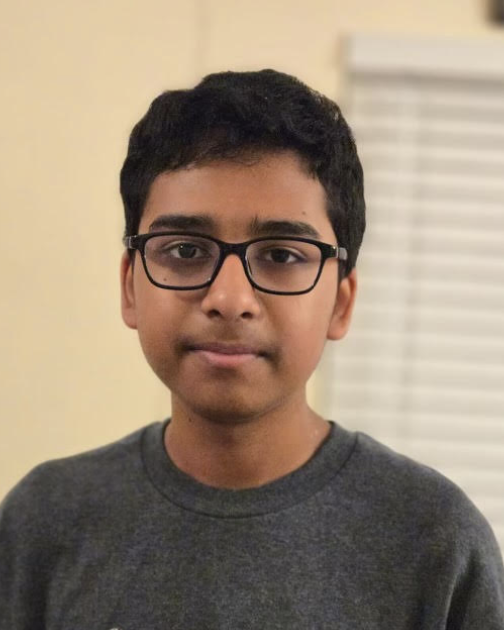EKANSH AGARWAL
Division B Scrambler
I am currently a junior at Garnet Valley High School. I serve as an officer for my school's Science Olympiad team, and I particularly enjoy build events. One of the things I enjoy doing outside of SciOly is cubing.
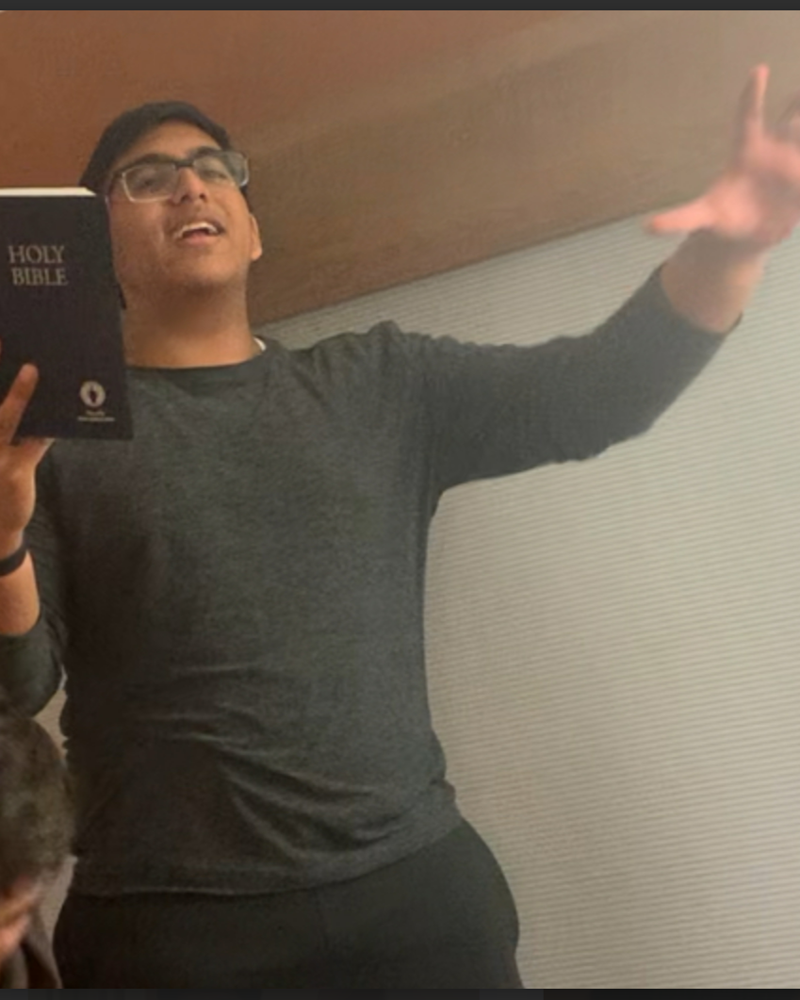
JAY AGARWAL
Division B Tower
Hi, I am Jay A, current national Air Traj champion and Tower Bronze medal holder for Div C. I love watches and building stuff and I have a twin named Emir who is ESing Optics for Div B here too!
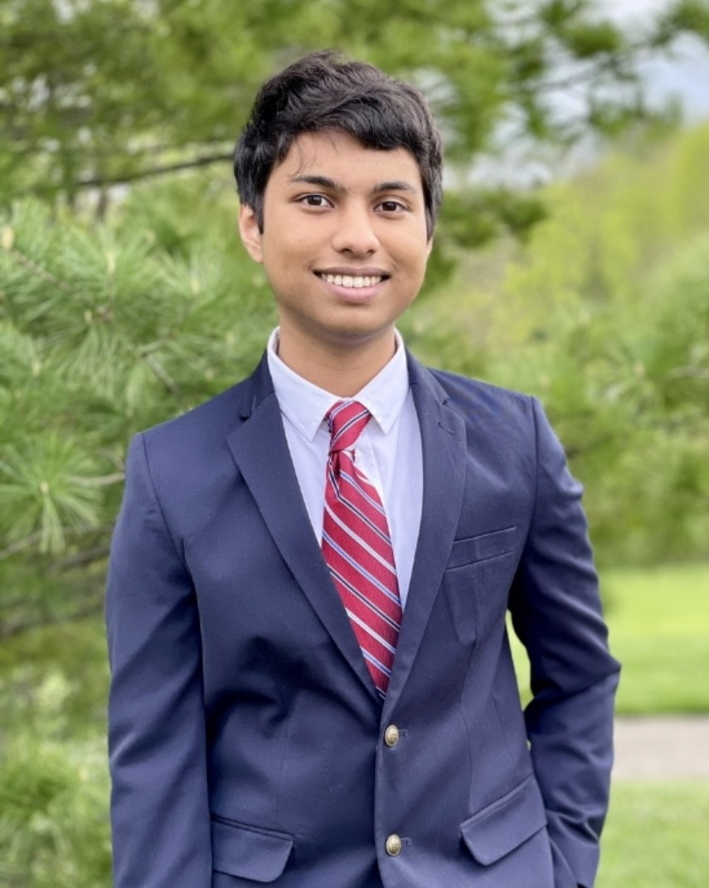
AMIR AKBAR
Division C Astronomy
Hey, y'all, I'm Amir, and I'll be supervising Astronomy. I graduated from Mason in 2023, and I'm currently studying physics at UChicago. I did SciOly for 5 years (+1 year as an alum) and my favorite event was Astronomy. For fun I like to play chess, poker, and Valorant.
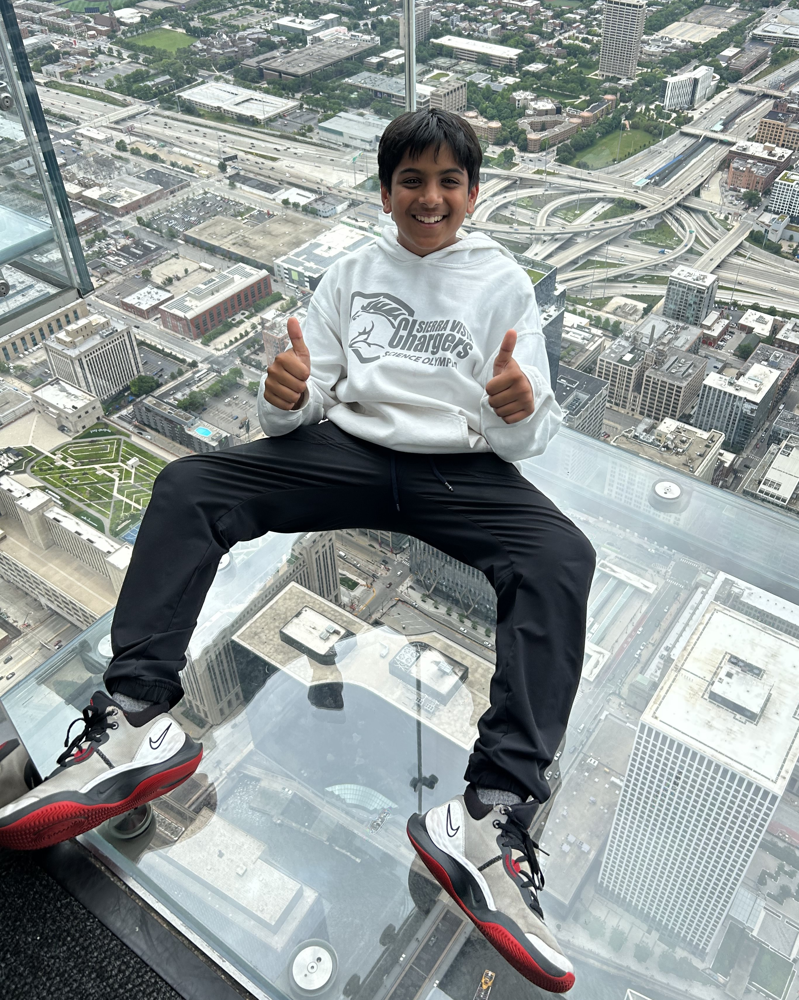
ZAID ANEES
Division B Fossils
Troy High School (Sierra Vista Middle School 2024)

ALICE CHI
Division C Helicopter & Division C Write It Do It
Hi! I’m Alice Chi, a Mason Science Olympiad enthusiast. I love free-flight-based events, WIDI, Air Trajectory, and EXPERIMENTal Design. I have been doing Science Olympiad for 4 years now, and I love, love, love Science Olympiad.
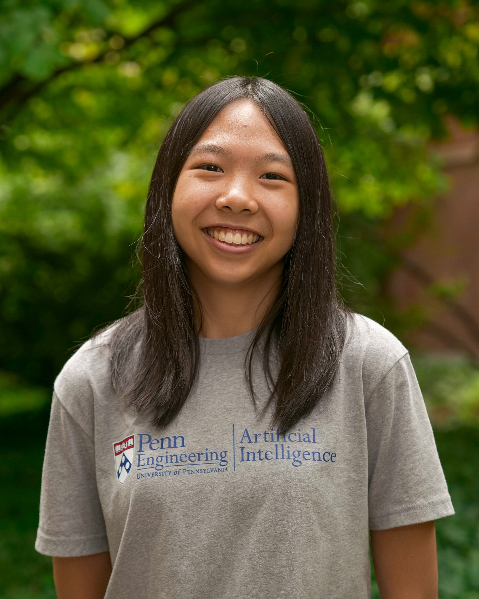
GRACE CHI
Division C Write It Do It
Hey, everyone! I'm Grace, and I'm studying Artificial Intelligence at the University of Pennsylvania. I was a Mason Science Olympiad captain for four years, and I won Write It Do It at Nationals in 2024. I’m also currently serving on the Pennsylvania Science Olympiad Board of Directors. Hoping to put on a fun and seamless event for you all!
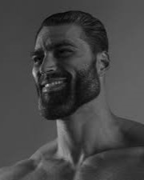
KARTHIK DANGETI
Division B Helicopter
Hi, I am Karthik Dangeti, a sophomore from Novi HS. I've done scioly since freshman year (Peter is my GOAT), and my greatest achievement is making Nats after we placed 11th at States the previous year.
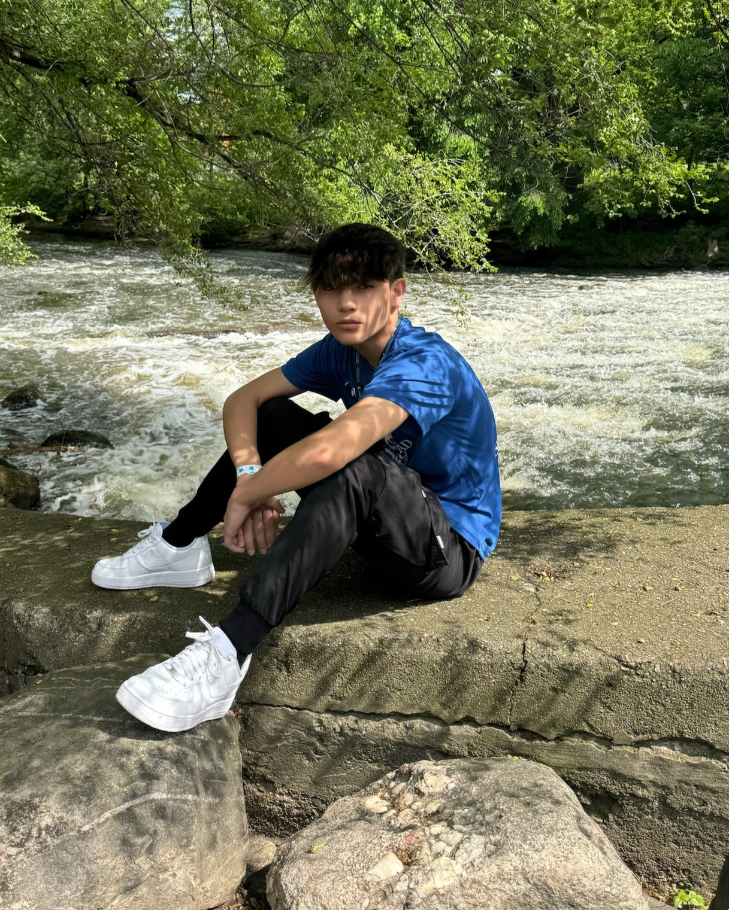
EYDAN COLLAZO DE JESUS
Division B Air Trajectory & Division C Tower
Hi, I'm Eydan! I'm competing for Orlando Science High School, and this will be my 3rd year in Science Olympiad. I placed 1st at the 2024 National Tournament for the Tower event, and it is also, funnily enough, my favorite event. (Crazy,right?) Thanks, and good luck! I hope I can meet you guys at comps!
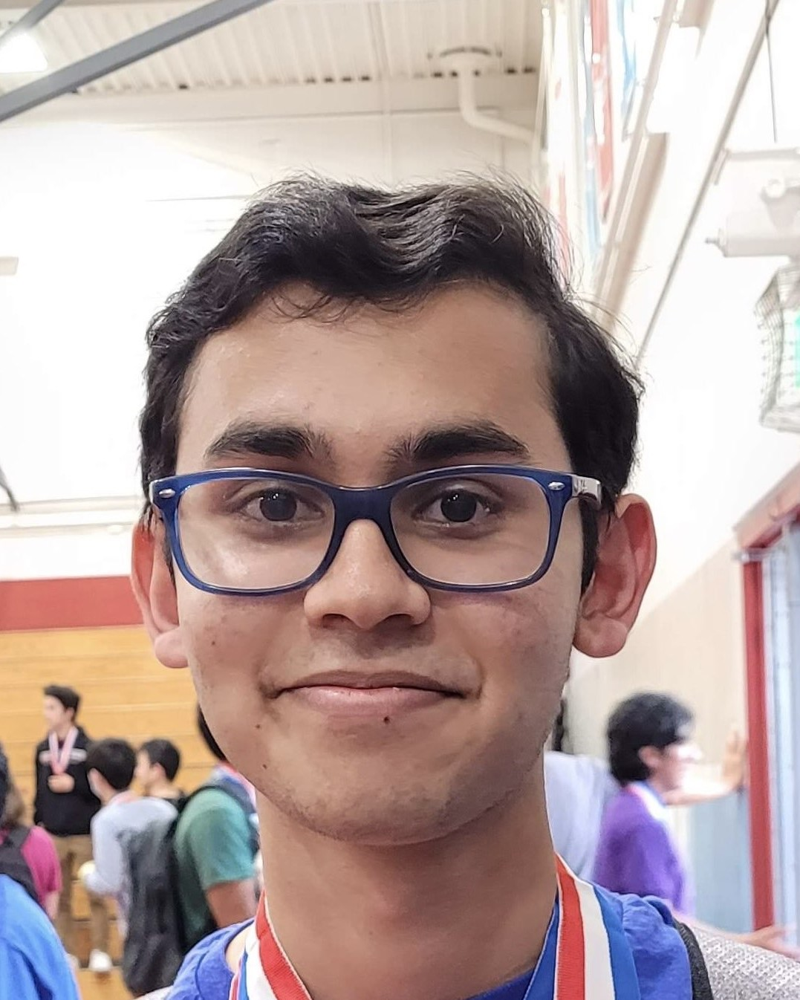
MANANK DOSHI
Division C Dynamic Planet
Hi, I'm Manank! I'm a freshman at UC Berkeley studying Astrophysics! I'm a Lynbrook alum, where I competed for all 4 years of high school. I primarily enjoyed doing earth science and physics events, and this is my first time supervising for Mason. Good luck and have fun!
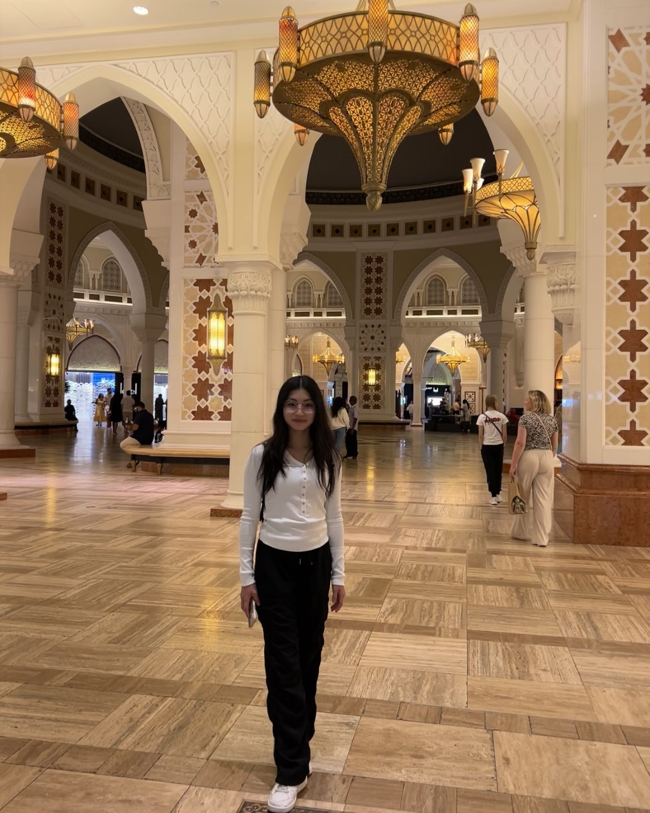
WENDY DUAN
Division B Experimental Design
Hi, my name is Wendy Duan, and I am a sophomore at Jordan High School in Texas. I’ve been doing SciOly for around 3 years, and my favorite event is Rocks and Minerals.
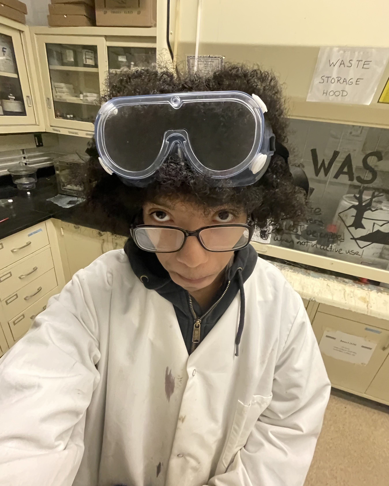
ANTHONY EGAN
Division C Chemistry Lab
Hi! My name is Anthony Egan, and I'm a senior at Guilderland High School in upstate New York. This will be my 5th full year doing Science Olympiad (having done Anatomy for most of them). Whenever I'm free from SciOly, I enjoy studying languages (currently on my 12th) and inorganic/materials chem!
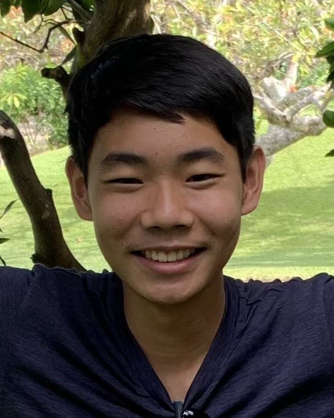
RYAN ETO
Division B Meteorology
Hi everyone! I’m a senior at Iolani School in Hawaii this year. I’ve competed in a number of earth science and physics events in the past. My favorite was definitely Dynamic Planet’s last year topic cycle! Hope you all enjoy the test!
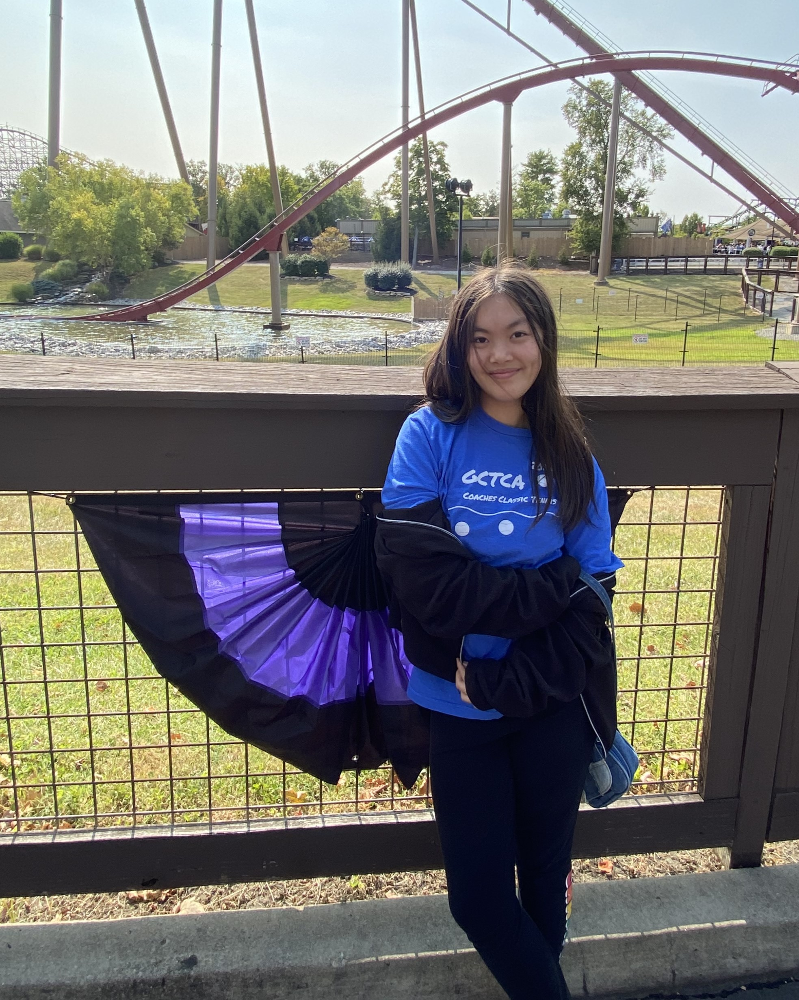
MARLEY FENG
Division C Microbe Mission
Hi, I'm Marley! I'm an ES for Microbe Div C, and I'm a junior at Mason HS. My favorite event is Microbe, and I like sleeping, reading, and stationery. I have 2 cats.
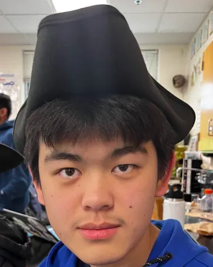
RAYMOND GAO
Division C Dynamic Planet
Hi! My name is Raymond and I'm currently a Junior at ABRHS in MA. I'm a big fan of all earth science events, and I also like math and chemistry. In my free time I like playing video games, listening to music, and playing ultimate frisbee.
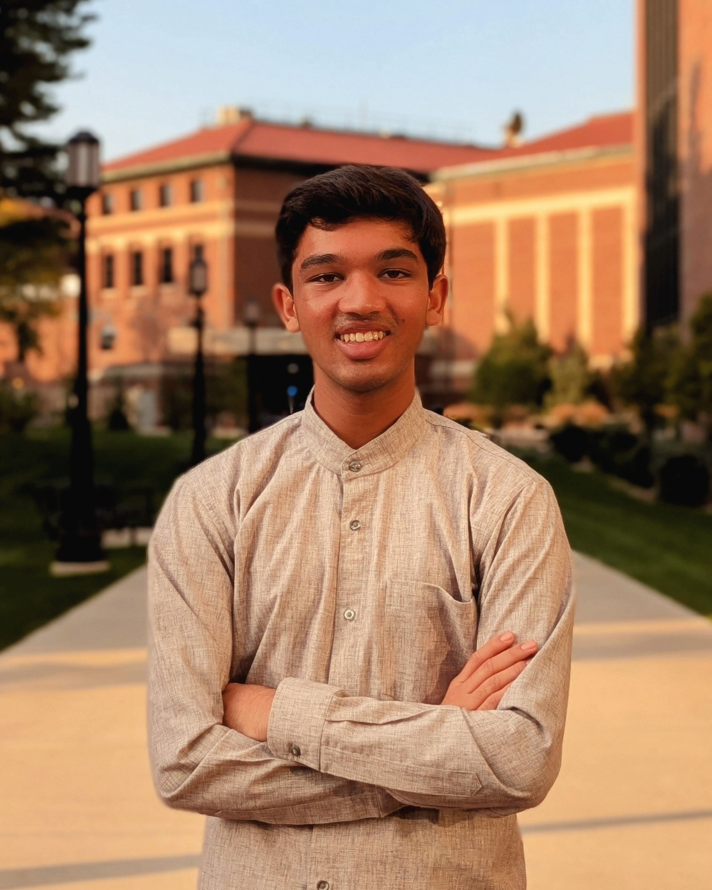
AMAR GOLLDAMUDI
Division C Electric Vehicle
Hello! I am a freshman at Purdue University, and I competed in NorCal in HS. My favorite event is Air Trajectory.
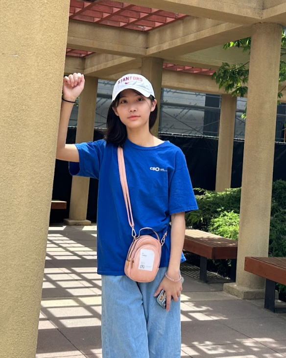
YUHAN GU
Division C Robot Tour, Division B Tower, & Division B/C Bot
Hello, my name is Yuhan Gu and I am a junior at Mason High School. This is my 2nd year in Science Olympiad, and I did Robot Tour and Tower for the 2023-2024 National Tournament. I like anything engineering or classical-music-related (I have played violin for 11 years), and I particularly enjoy watching MIT maker portfolio videos on YouTube.

SHIVEN GUPTA
Division B Wind Power
Hey! I'm Shiven from Chattahoochee High School. This is my 3rd year in Science Olympiad, and I do events like Experimental Design, Optics, and Wind Power - and I love ExpD the most! My favorite band is Starset, and I enjoy getting absolutely destroyed in Elden Ring as a pastime. Star Wars and Halo are pretty cool, too.
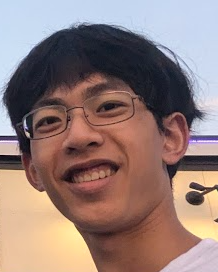
MACKHOI HOANG
Division B Meteorology
Sophomore, MMS SO Captain. Loves electricity, renewable energy, world history, CJKV and Sinosphere languages/culture, and music.
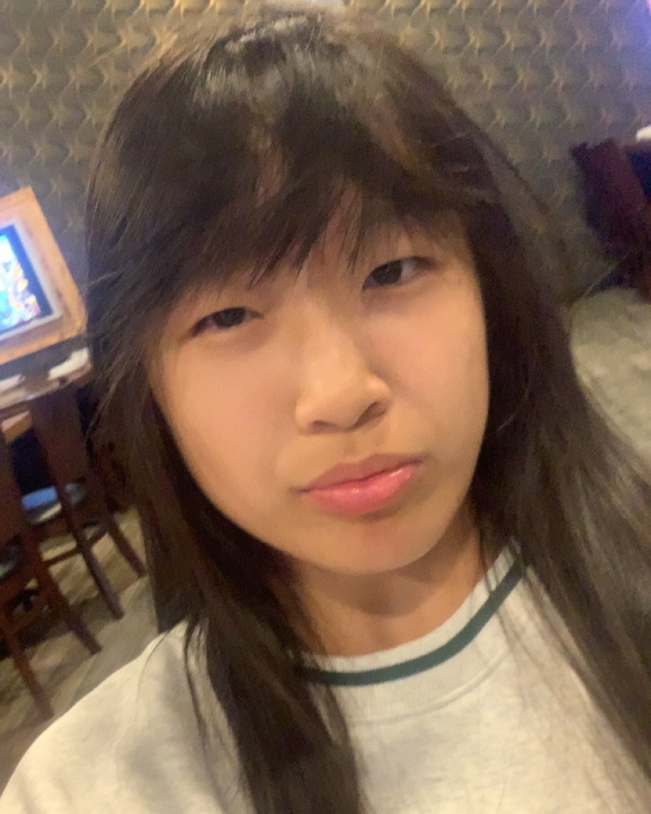
CLAIRE HUANG
Division B Anatomy and Physiology & Division B Entomology
Hey I'm Claire, a current sophomore at Solon High School. This will be my 4th year competing in SciOly, and I'm super excited to be y'alls ES for Entomology and Anatomy. Some of my favorite SciOly events are Code and Mat Sci just cuz they're fun to study and just cool events. I like bio :)
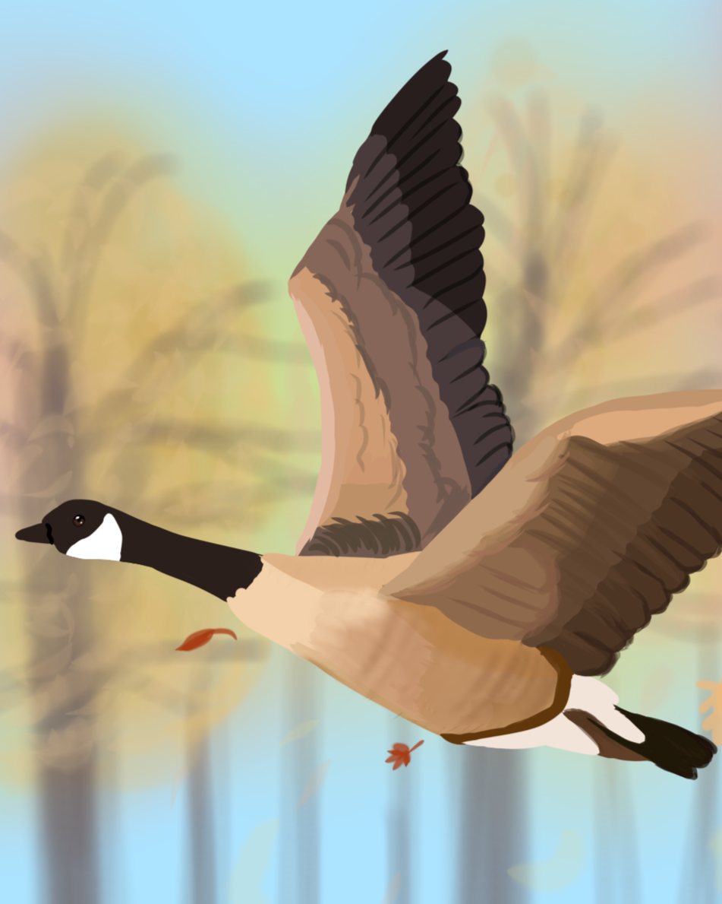
JERRY HUANG
Division B Disease Detectives
I like to go birding as well as play piano and violin. This is my 3rd year in Science Olympiad and my favorite events are Disease Detectives, Flight, and Ornithology!
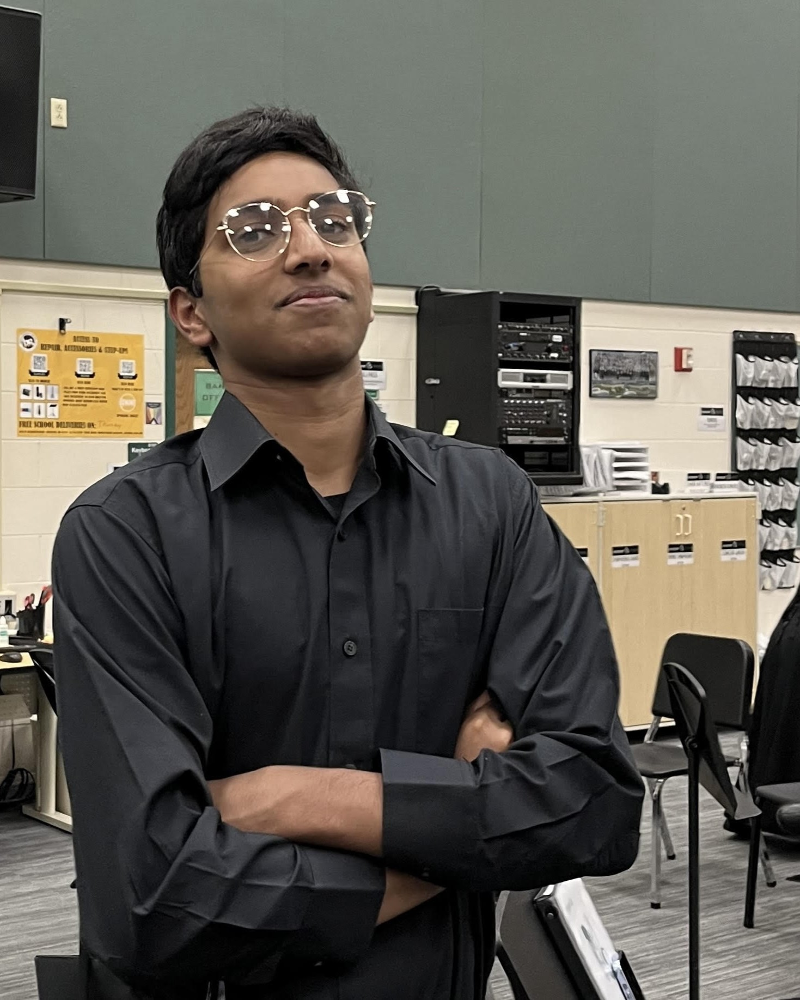
ANEESH IYER
Division C Codebusters & Division C Optics
Hey! I'm Aneesh, a senior from Mason High School and one of the captains for our Science Olympiad team. Most events that I do are in the physics/inquiry category, being Codebusters, Optics, and EXPD. Hopefully you guys have a good time at the tournament, it's a LOT of work to run.
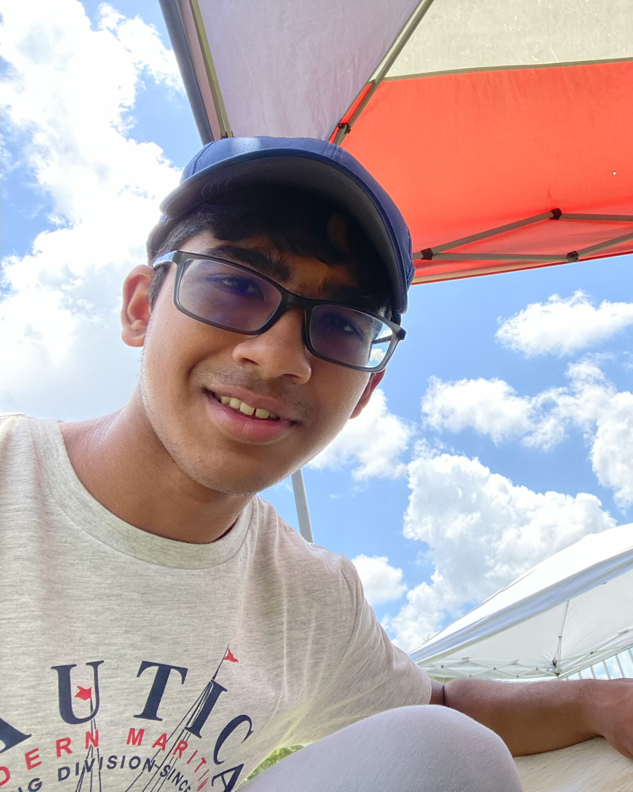
MURUGAN JAGAN
Division B Reach for the Stars
Looking forward to writing RFTS (And looking at y'alls attempts to answer them)! I'm currently the biggest troll to come out of Texas, and I intend to keep it that way.
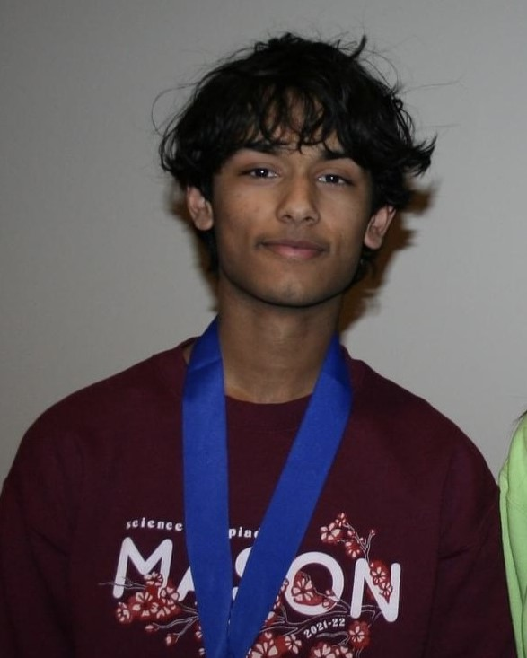
NIKHIL JAIN
Division C Wind Power
I'm Nikhil, a senior at Mason High School. I've been doing Science Olympiad for 6 years, and my favorite events are Astronomy, Circuit Lab, Wi-Fi Lab, and Wind Power.
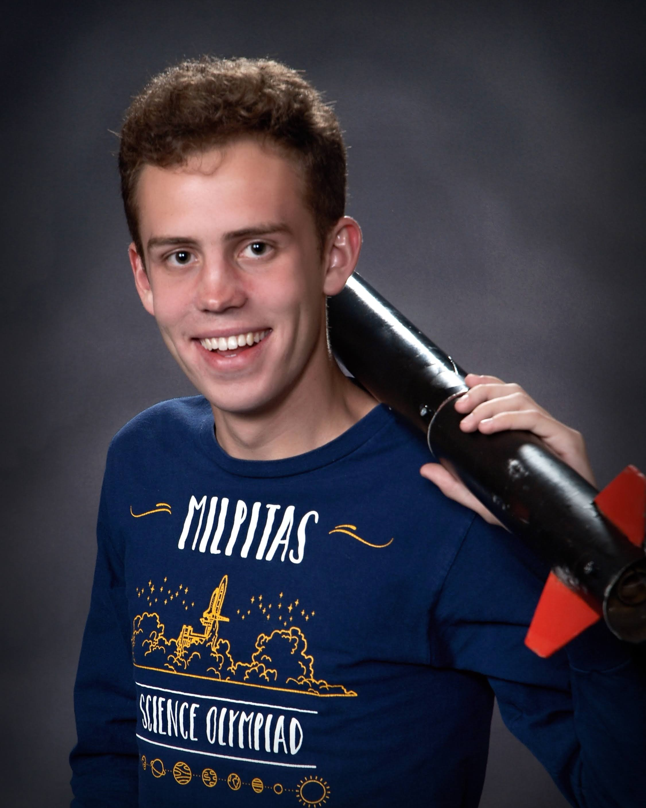
ISAAC JONES
Division C Experimental Design
Hi, all! :D I'm Isaac, and in high school I did inquiry events as a part of Milpitas SciOly in NorCal. My hobbies include hiking, Legend of Zelda, Minecraft, making model RC planes, and learning about electronics/computer science! I'm currently studying EE/CS at UC Berkeley, class of 2028. GO MHS SCIOLY! GO BEARS! <3
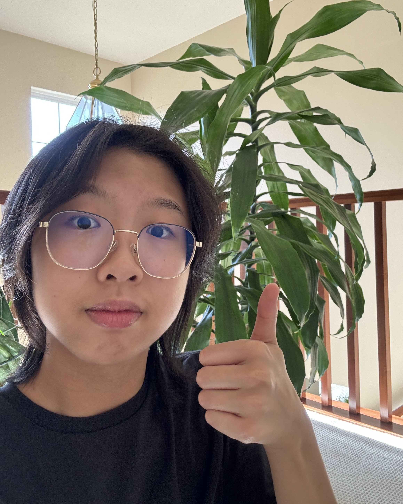
SAMANTHA LAM
Division C Entomology & Division B/C K-Pop Trivia
Hey, all, I’m Sammi! I am a senior at Mason. This is my 2nd year doing Science Olympiad, and I love doing life science and ID events. In my free time, I like to draw, play video games, listen to music, and grind Treebo! (I’m the Lorax but Asian.) I’m really looking forward to this year’s season, as studying science topics I’m interested in and making new friends is my hobby!